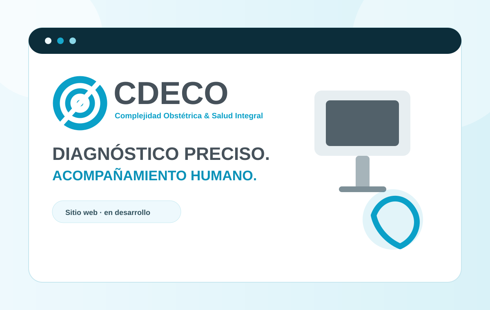

Servicios organizados
Ginecología, obstetricia, ecografía y salud integral con una navegación fácil de comprender.
SALUD · PROYECTO EN DESARROLLO
Una nueva presencia digital para comunicar experiencia médica, ecografía especializada y atención integral con una imagen clara, humana y profesional.

EL CONTEXTO
CDECO trabaja alrededor de la complejidad obstétrica, la ecografía especializada y la salud integral. Su propuesta reúne atención ginecológica y obstétrica, seguimiento del embarazo, estudios ecográficos y otros servicios complementarios de salud.
El reto del futuro sitio será organizar esa amplitud de servicios sin perder cercanía, priorizando la confianza, la claridad de la información y una experiencia sencilla para pacientes que necesitan orientarse y agendar atención.
LO QUE ESTAMOS CONSTRUYENDO
El proyecto está en fase de desarrollo. La estructura visual parte de la identidad de CDECO y del concepto de diagnóstico preciso con acompañamiento humano.
Ginecología, obstetricia, ecografía y salud integral con una navegación fácil de comprender.
Presentación del equipo, experiencia y enfoque médico sin saturar la experiencia con información innecesaria.
Información pensada para resolver dudas, explicar estudios y facilitar el siguiente paso.
Llamadas a la acción y contacto visibles para reducir fricción al momento de agendar.
ESTADO DEL PROYECTO
Esta ficha crecerá a medida que avancemos en arquitectura, diseño, contenido y desarrollo. El proyecto se muestra desde ahora porque forma parte activa del trabajo de Futuro Digital.